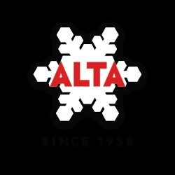

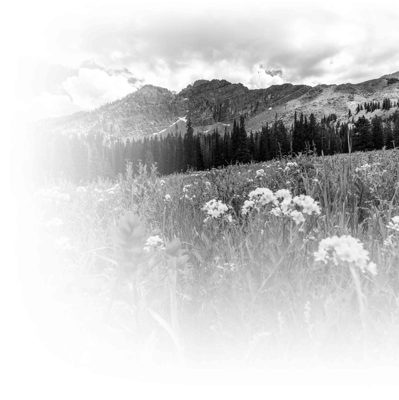

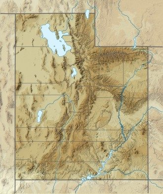


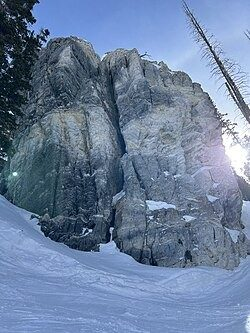
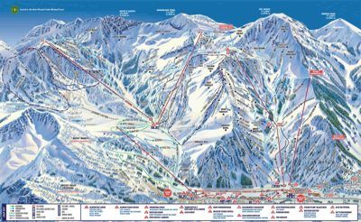
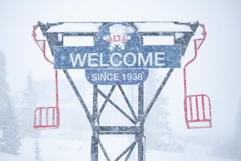
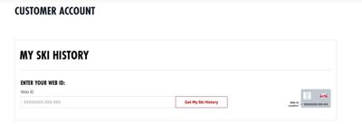
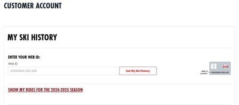
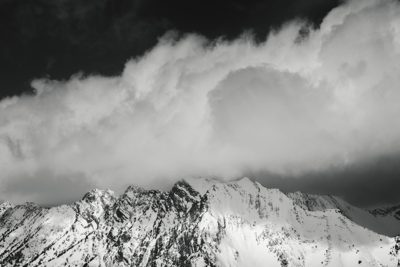
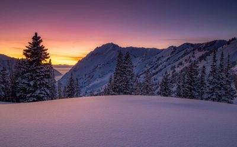
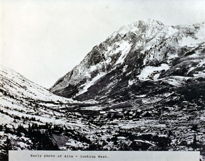
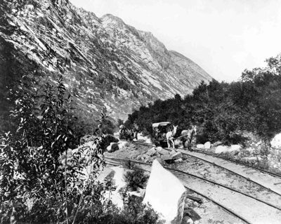
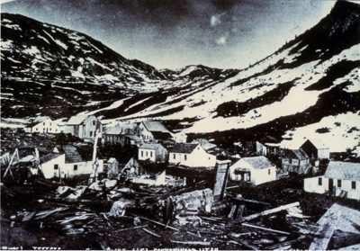
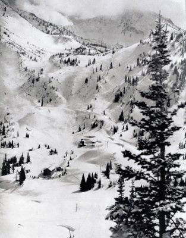
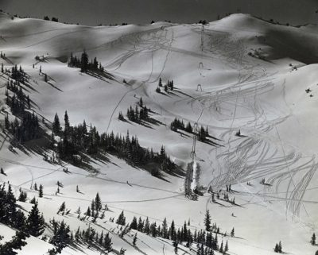
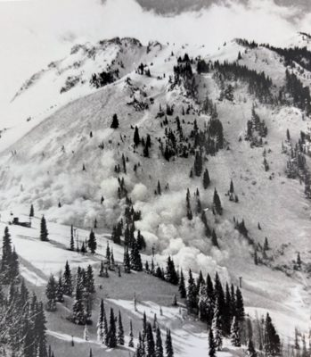
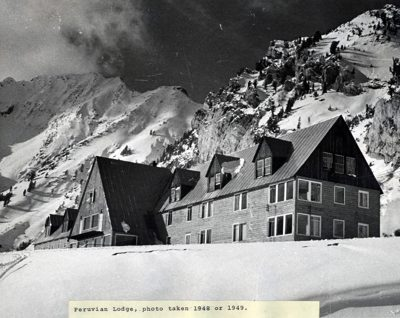
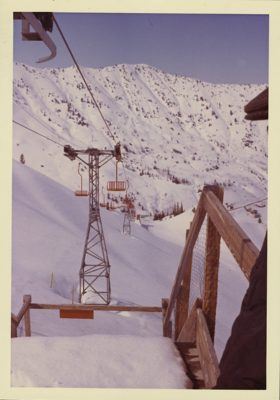
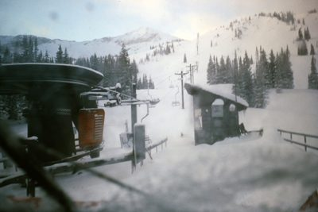

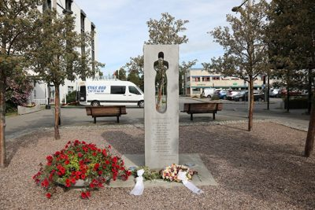

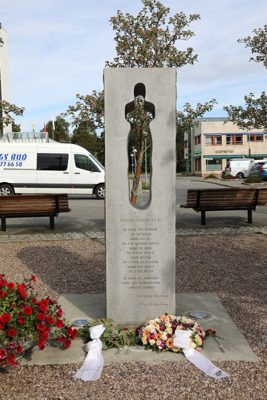

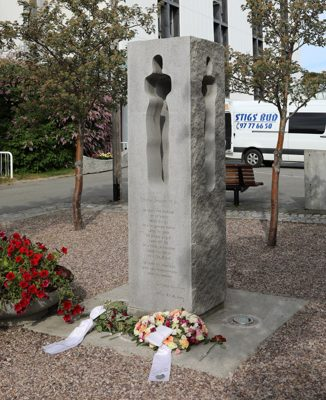

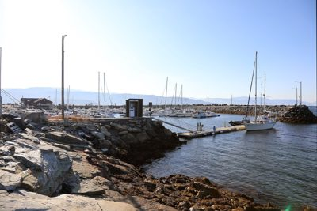

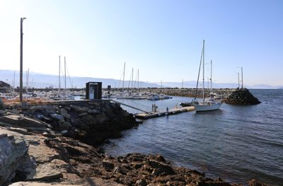

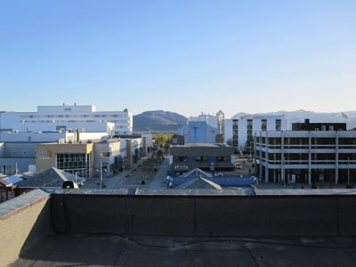

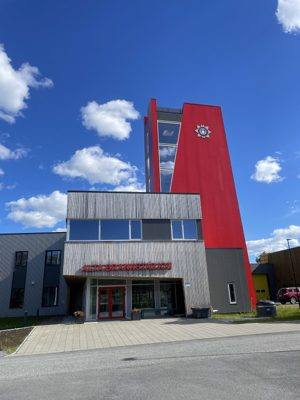

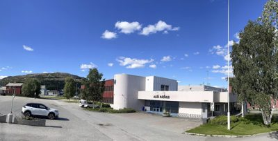

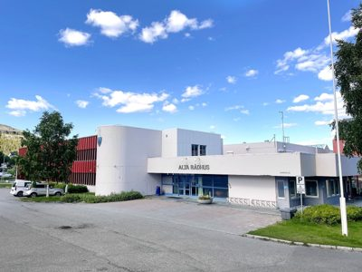

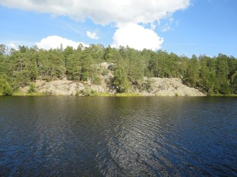

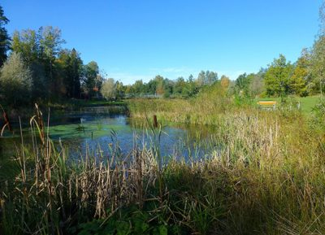

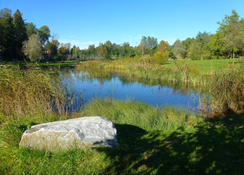

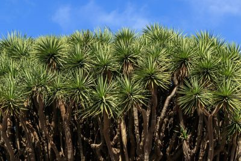

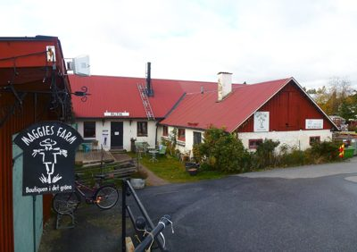

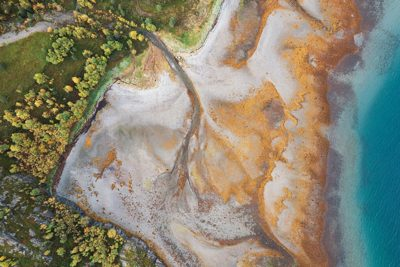

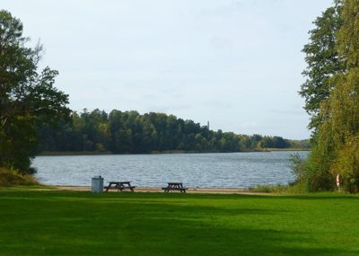

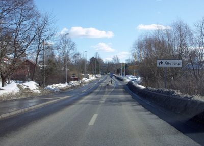

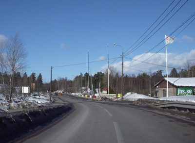

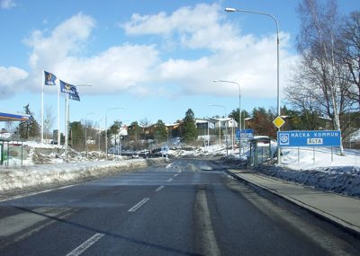

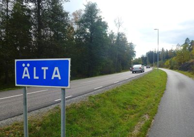
.jpg){kind=link}
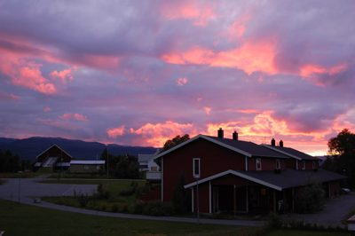
.jpg){kind=link}
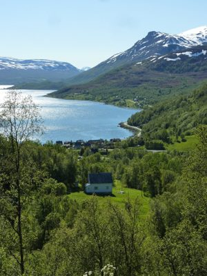
.jpg){kind=link}
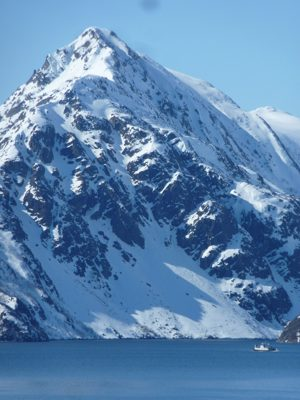

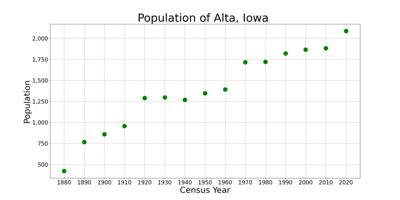
.jpg){kind=link}
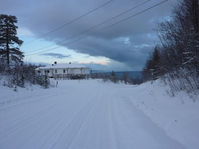

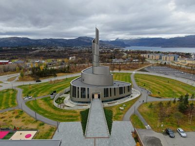

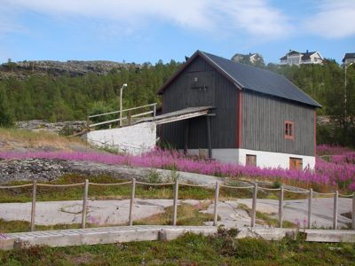
ski-alta — research
source: https://www.alta.com/
title: Welcome to Alta Ski Area
meta description: Located just outside of Salt Lake City, UT, Alta is annually covered by 500+ inches of the Greatest Snow on Earth. Come ski Alta.
meta og:description: Located just outside of Salt Lake City, UT, Alta is annually covered by 500+ inches of the Greatest Snow on Earth. Come ski Alta.
meta og:site_name: Alta Ski Area

fonts: n/a
css hexes: #000000(52), #d72027(3), #ffffff(3), #f8f9fa(3), #fdfdfd(3), #1f1f23(2), #ffeddb(2), #d5d5ff(2), #bdbdff(2), #a4a4ff(2), #18ff18(2), #bf3c2c(2)
headings
- Counting Down To Our 89th Season
- Contents
- Alta Ski Area
- History
- Climate
- Ski area
- References
- Sources
- External links
copy
Welcome to Alta Ski Area Alta Company Logo Ski Season Passes Lift Tickets Lift and Terrain Status Grooming Mountain Info Maps Parking Reservations Ski School Private Lessons Adult Kids Ski Shops Rentals Tips For Skiing Alta First Time Skiing Alta? Ikon and Mountain Collective Winter Activities My Ski History Stay Plan Your Trip Getting Here Vacation Planning FAQs Lodging Food and Drink Additional Services Events Alta Community About Alta Environmental Center Shop Season Passes Benefits Ski School Ski Shops Retail Rentals Summer Counting Down To Our 89th Season Opening Day is scheduled for Friday, November 20th—conditions permitting. Your Preseason Checklist > Parking Reservations > Plan your trip Bring your family. Bring your friends. Or just bring yourself and experience a natural mountain environment with a rich history of deep powder skiing. Explore Alta Alta Environmental Center Learn More > 44,060 trees planted since 1991 131,064 plants planted since 1991 Upcoming events At Alta The Alta Events Calendar is home to community events, holiday festivities and environmental stewardship opportunities. Nov 12-Nov 12 Alta Birding Hikes Grab your hiking boots and explore Alta through a different lens on our monthly Birding Hikes, where we survey the area’s avian residents alongside a conservation ecologist and citizen scientists from Tracy Aviary. Nov 14 S'mores and Snow Join Alta Community Enrichment and Alta Ski Area for s’mores around a bonfire celebrating the winter season. Pick up your Alta pass and enter an opportunity drawing. All Events Alta Stories All Stories Alta Company Logo Facebook Social Media Icon X Social Media Icon Instagram Social Media Icon YouTube Social Media Icon Ski Ticket Info Ski School Lift and Terrain Status Winter Activities Maps Mountain Policy Statements Safety and Awareness Tips Stay Plan Your Trip Lodging Food and Drink Retail Additional Services About Alta Alta Community Environmental Center Conditions Current Forecast Road Snow History Culture Events Jobs Stories Photo of the Day Media Resources Hours Lifts Opening Day is November 20th—conditions permitting Office Monday–Thursday | 8am–4:30pm Contact Us Gear Store In partnership with Mountain Collective Logo Forrest Service Logo Ikon Pass Logo ©2026 Alta Ski Area. All rights reserved. | Privacy Policy || WIKIPEDIA: Alta Ski Area - Wikipedia Jump to content Main menu Main menu move to sidebar hide Navigation Main page Contents Current events Random article About Wikipedia Contact us Contribute Help Learn to edit Community portal Recent changes Upload file Special pages Search Search Appearance Donate Create account Log in Personal tools Donate Create account Log in Contents move to sidebar hide (Top) 1 History Toggle History subsection 1.1 Mining era history 1.2 Ski area history 2 Climate 3 Ski area Toggle Ski area subsection 3.1 Partnership with Snowbird 3.2 Lifts 3.3 Terrain aspects 4 References 5 Sources 6 External links Toggle the table of contents Alta Ski Area 3 languages مصرى Français Bahasa Indonesia Edit links Article Talk English Read Edit View history Tools Tools move to sidebar hide Actions Read Edit View history General What links here Related changes Upload file Permanent link Page information Cite this page Get shortened URL Switch to legacy parser Print/export Download as PDF Printable version In other projects Wikimedia Commons Wikidata item Appearance move to sidebar hide Coordinates : 40°34′51″N 111°38′14
refs kept (people-screened)
- 01.jpg: This is the logo for Alta, a company established in 1938. | logo=True | palette ['#000000', '#e6dcdc', '#030000', '#250b0d', '#000001']
- 04.jpg: A black and white photograph of a mountainous landscape with forests and wildflowers in the foreground. | logo=False | palette ['#cecece', '#f3f3f3', '#6d6d6d', '#fdfdfd', '#ffffff']
- 08.jpg: This is a topographic map showing geographical features like rivers and lakes in a desert-like region. | logo=False | palette ['#b6a97d', '#d0c7a0', '#9b885c', '#c8bc95', '#d8d5b8']
- 09.jpg: This is a topographic map of the United States showing geographical features like mountains and rivers. | logo=False | palette ['#b5c5a2', '#ddd9ae', '#8aafbf', '#e3e9cd', '#c2d9c9']
- 13.jpg: A large, snow-dusted rock formation rises sharply against a clear blue sky, surrounded by trees and bright sunlight. | logo=False | palette ['#7891bd', '#64768c', '#304353', '#879ec8', '#aabde0']
- site02.jpg: This is a detailed ski resort map showing trails, lifts, and facilities in a mountainous area. | logo=True | palette ['#92a0b7', '#adbbca', '#4d82ac', '#c8d1d5', '#e7ebe6'] | SOURCE site: About Alta Ski Area — www.alta.com https://www.alta.com/about
- site05.jpg: A snow-covered sign for Alta Ski Area welcomes visitors with the text 'WELCOME SINCE 1938' and a logo featuring the name 'ALTA' surrounded by snowflake designs. | logo=True | palette ['#d2dce9', '#e3ecf6', '#95a0ba', '#eaf1f9', '#f1f6fb'] | SOURCE site: About Alta Ski Area — www.alta.com https://www.alta.com/about
- site07.jpg: This image shows a customer login page with an email input field and a submit button. | logo=False | palette ['#ffffff', '#fcfcfc', '#c3bcbf', '#fdfffe', '#fffffe'] | SOURCE site: My Ski History — www.alta.com https://www.alta.com/tickets-and-passes/my-ski-history
- site09.jpg: This image displays a customer account page for viewing ski history with an ALTA logo visible. | logo=True | palette ['#ffffff', '#fcfcfc', '#cbc9cb', '#fffffe', '#feffff'] | SOURCE site: My Ski History — www.alta.com https://www.alta.com/tickets-and-passes/my-ski-history
- site10.jpg: This image displays a customer account page for viewing ski history with an Alta logo visible. | logo=True | palette ['#ffffff', '#fbfbfb', '#c4bcbe', '#fffffe', '#feffff'] | SOURCE site: My Ski History — www.alta.com https://www.alta.com/tickets-and-passes/my-ski-history
- site12.jpg: A black and white photograph of snow-covered mountains partially obscured by dramatic clouds. | logo=False | palette ['#adadab', '#2b2d2c', '#babab8', '#8c8d8b', '#cececc'] | SOURCE site: Alta's Timeline — www.alta.com https://www.alta.com/about/timeline
- site13.jpg: A breathtaking winter landscape featuring snow-covered mountains and trees under a vibrant sunset sky with hues of purple and orange. | logo=False | palette ['#765f7e', '#282439', '#4f4464', '#957086', '#cd9386'] | SOURCE site: Alta's Timeline — www.alta.com https://www.alta.com/about/timeline
- site14.jpg: This is an early black-and-white photograph of the town of Alta in a snowy mountain valley, looking westward. | logo=False | palette ['#28292b', '#7b7c7d', '#eef1ee', '#ced2d2', '#f6f6f2'] | SOURCE site: Alta's Timeline — www.alta.com https://www.alta.com/about/timeline
- site15.jpg: An old photograph showing horse-drawn carts on railway tracks in a mountainous area with rocky terrain and trees. | logo=False | palette ['#2f2f2f', '#a4a4a4', '#636363', '#f9f9f9', '#e2e2e2'] | SOURCE site: Alta's Timeline — www.alta.com https://www.alta.com/about/timeline
- site16.jpg: This is a historical black-and-white photograph depicting the abandoned mining town of Treasure, Utah, surrounded by snow-covered mountains. | logo=False | palette ['#120d0c', '#353234', '#717478', '#acb3b2', '#d8d9cc'] | SOURCE site: Alta's Timeline — www.alta.com https://www.alta.com/about/timeline
- site23.jpg: A black and white photograph showing a snowy mountain landscape with trees, ski lifts, and buildings in the distance. | logo=False | palette ['#a09f9f', '#454549', '#c8c7c9', '#dfdfe2', '#ebebee'] | SOURCE site: Alta's Timeline — www.alta.com https://www.alta.com/about/timeline
- site25.jpg: A black and white photograph showing a snowy mountain landscape with ski runs, trees, and ski lift infrastructure. | logo=False | palette ['#a1a1a3', '#373735', '#777776', '#b7b9b8', '#d1d1cf'] | SOURCE site: Alta's Timeline — www.alta.com https://www.alta.com/about/timeline
- site28.jpg: A black and white photograph shows a large avalanche of snow cascading down a steep, forested mountainside. | logo=False | palette ['#8f8e8e', '#b7b6b6', '#494849', '#e4e3e3', '#d5d6d5'] | SOURCE site: Alta's Timeline — www.alta.com https://www.alta.com/about/timeline
- site31.jpg: A black and white photograph of the Peruvian Lodge nestled in a snowy mountain landscape, taken in 1948 or 1949. | logo=False | palette ['#262626', '#9c9d9c', '#616262', '#d2d2d0', '#e6e6e0'] | SOURCE site: Alta's Timeline — www.alta.com https://www.alta.com/about/timeline
- site35.jpg: A vintage photograph showing a ski lift ascending a snow-covered mountain with forested slopes in the background. | logo=False | palette ['#998a99', '#b4a5aa', '#664d57', '#c5b8b2', '#e5debc'] | SOURCE site: Alta's Timeline — www.alta.com https://www.alta.com/about/timeline
- site38.jpg: A snowy ski resort with chairlifts and buildings surrounded by snow-covered mountains and trees. | logo=False | palette ['#76797b', '#abacae', '#2a3028', '#cdd2d4', '#e8ebeb'] | SOURCE site: Alta's Timeline — www.alta.com https://www.alta.com/about/timeline
- commons01.jpg: A memorial monument with an abstract sculpture and inscriptions stands in a public space surrounded by trees, benches, and flowers. | logo=False | palette ['#665c4f', '#8e8073', '#403228', '#d6e2f0', '#b1aea7'] | SOURCE commons: Alta, monumento a steinar jessen, sedicenne morto nella strage di utoya, 01.jpg — Francesco Bini · Wikimedia Commons · CC-BY-SA https://commons.wikimedia.org/wiki/File:Alta,_monumento_a_steinar_jessen,_sedicenne_morto_nella_strage_di_utoya,_01.jpg
- commons02.jpg: A memorial monument with an engraved poem and floral tributes in front of it. | logo=False | palette ['#7b6f61', '#4c3d33', '#a7a39a', '#d8e5f4', '#cbd4e1'] | SOURCE commons: Alta, monumento a steinar jessen, sedicenne morto nella strage di utoya, 02.jpg — Francesco Bini · Wikimedia Commons · CC-BY-SA https://commons.wikimedia.org/wiki/File:Alta,_monumento_a_steinar_jessen,_sedicenne_morto_nella_strage_di_utoya,_02.jpg
- commons03.jpg: A stone monument with carved silhouettes of two figures and an inscription in Norwegian, surrounded by flowers and a white ribbon. | logo=False | palette ['#645e54', '#877e74', '#3f372c', '#a19e97', '#c6c8c9'] | SOURCE commons: Alta, monumento a steinar jessen, sedicenne morto nella strage di utoya, 03.jpg — Francesco Bini · Wikimedia Commons · CC-BY-SA https://commons.wikimedia.org/wiki/File:Alta,_monumento_a_steinar_jessen,_sedicenne_morto_nella_strage_di_utoya,_03.jpg
- commons04.jpg: A marina with numerous boats docked along piers, surrounded by rocky shores and distant mountains under a clear blue sky. | logo=False | palette ['#f3fbfe', '#bdd2f0', '#393432', '#65676d', '#8f929d'] | SOURCE commons: Alta, porto turistico 01.jpg — Francesco Bini · Wikimedia Commons · CC-BY-SA https://commons.wikimedia.org/wiki/File:Alta,_porto_turistico_01.jpg
- commons05.jpg: A marina with numerous boats docked along piers, surrounded by rocky shores and distant mountains under a clear blue sky. | logo=False | palette ['#646875', '#2d2b2c', '#adc3e9', '#d8ebfc', '#f7fdff'] | SOURCE commons: Alta, porto turistico 02.jpg — Francesco Bini · Wikimedia Commons · CC-BY-SA https://commons.wikimedia.org/wiki/File:Alta,_porto_turistico_02.jpg
- commons06.jpg: A high-angle view of an urban area with modern buildings and distant mountains under a clear blue sky. | logo=False | palette ['#c3dbf2', '#1a1d21', '#94b5dd', '#5e6c7e', '#303a45'] | SOURCE commons: Alta-Marketsgata.JPG — Caroline Maybach · Wikimedia Commons · CC0 https://commons.wikimedia.org/wiki/File:Alta-Marketsgata.JPG
- commons07.jpg: A modern fire station with a prominent red tower and signage reading 'ALTA BRANNSTASJON' under a blue sky with white clouds. | logo=True | palette ['#2e57a8', '#a6b0bc', '#463145', '#6380b1', '#43609a'] | SOURCE commons: Alta brannstasjone.jpg — Harald Groven · Wikimedia Commons · CC-BY-SA https://commons.wikimedia.org/wiki/File:Alta_brannstasjone.jpg
- commons08.jpg: A wide-angle view of the Alta Rådhus building under a bright blue sky with scattered clouds. | logo=False | palette ['#4f6ba7', '#3a434d', '#a0adc2', '#728bbc', '#c3ccdc'] | SOURCE commons: Alta rådhus.jpg — Harald Groven · Wikimedia Commons · CC-BY-SA https://commons.wikimedia.org/wiki/File:Alta_r%C3%A5dhus.jpg
- commons09.jpg: The image shows the exterior of Alta Rådhus, a modern building with white and red architectural elements under a blue sky with scattered clouds. | logo=False | palette ['#558de5', '#c2d9f0', '#8993a2', '#455a6a', '#96a8c5'] | SOURCE commons: Alta rådhus - 53840837820.jpg — Harald Groven · Wikimedia Commons · CC-BY-SA https://commons.wikimedia.org/wiki/File:Alta_r%C3%A5dhus_-_53840837820.jpg
- commons11.jpg: A serene lake surrounded by dense forest and rocky terrain under a partly cloudy sky. | logo=False | palette ['#5d604f', '#34414e', '#a9ceef', '#8e967c', '#e0ebf3'] | SOURCE commons: Fishinglake Älta - panoramio.jpg — Jerry Materez · Wikimedia Commons · CC-BY https://commons.wikimedia.org/wiki/File:Fishinglake_%C3%84lta_-_panoramio.jpg
- commons12.jpg: A serene pond surrounded by tall reeds and trees under a clear blue sky. | logo=False | palette ['#1a2216', '#7c8a66', '#4d533a', '#68b4ed', '#87d9fd'] | SOURCE commons: Hedviglundsparken 2015a.jpg — Holger.Ellgaard · Wikimedia Commons · CC-BY-SA https://commons.wikimedia.org/wiki/File:Hedviglundsparken_2015a.jpg
- commons13.jpg: A serene landscape featuring a calm pond surrounded by lush green grass and reeds under a clear blue sky. | logo=False | palette ['#656d3d', '#7d8c58', '#1f2a16', '#80bbd8', '#9addf7'] | SOURCE commons: Hedviglundsparken 2015b.jpg — Holger.Ellgaard · Wikimedia Commons · CC-BY-SA https://commons.wikimedia.org/wiki/File:Hedviglundsparken_2015b.jpg
- commons14.jpg: A dense cluster of green, spiky plants with thick, twisted trunks stands against a bright blue sky. | logo=False | palette ['#454125', '#1c160f', '#68754b', '#5d98ef', '#85a4b0'] | SOURCE commons: Los Dragos Gemelos - Breña Alta - La Palma 02.jpg — H. Zell · Wikimedia Commons · CC-BY-SA https://commons.wikimedia.org/wiki/File:Los_Dragos_Gemelos_-_Bre%C3%B1a_Alta_-_La_Palma_02.jpg
- commons15.jpg: The image shows the exterior of Maggie's Farm, a boutique and dog daycare facility with red roofs and white walls, surrounded by outdoor seating areas and signage. | logo=True | palette ['#624644', '#2b2925', '#feffff', '#968a8b', '#f7fdfe'] | SOURCE commons: Maggies farm 2015.jpg — Holger.Ellgaard · Wikimedia Commons · CC-BY-SA https://commons.wikimedia.org/wiki/File:Maggies_farm_2015.jpg
- commons16.jpg: An aerial view of a coastal area with vibrant autumn foliage and swirling patterns of sediment along the shoreline. | logo=False | palette ['#867157', '#3e594c', '#98998d', '#c49d73', '#cac2bb'] | SOURCE commons: Oallenjárga of Kvenvika in Alta, Troms og Finnmark, Norway, 2023 September.jpg — Ximonic (Simo Räsänen) · Wikimedia Commons · CC-BY-SA https://commons.wikimedia.org/wiki/File:Oallenj%C3%A1rga_of_Kvenvika_in_Alta,_Troms_og_Finnmark,_Norway,_2023_September.jpg
- commons18.jpg: A serene lakeside view with picnic tables on a grassy shore surrounded by trees. | logo=False | palette ['#243815', '#475a1e', '#dbebf4', '#e1eff8', '#a1b2b0'] | SOURCE commons: Älta Stensö badplats 2015.jpg — Holger.Ellgaard · Wikimedia Commons · CC-BY-SA https://commons.wikimedia.org/wiki/File:%C3%84lta_Stens%C3%B6_badplats_2015.jpg
- commons20.jpg: A snowy road with bare trees and a sign pointing to 'Alta Idr.pl' under a clear blue sky. | logo=False | palette ['#60656e', '#373942', '#7a8895', '#9fc8ec', '#c1e0f9'] | SOURCE commons: Ältavägen 2010a.jpg — Holger.Ellgaard · Wikimedia Commons · CC-BY-SA https://commons.wikimedia.org/wiki/File:%C3%84ltav%C3%A4gen_2010a.jpg
- commons21.jpg: A snowy road with signs and a flag displaying 'jhs.se' in the background. | logo=True | palette ['#6084b4', '#3e3b3f', '#5c687b', '#749dc8', '#9ab7d2'] | SOURCE commons: Ältavägen 2010b.jpg — Holger.Ellgaard · Wikimedia Commons · CC-BY-SA https://commons.wikimedia.org/wiki/File:%C3%84ltav%C3%A4gen_2010b.jpg
- commons22.jpg: A snowy road with a blue sign indicating 'Nacka Kommun' and 'Alta', alongside Statoil flags and a gas station on the left. | logo=True | palette ['#38434e', '#63727d', '#93b6d2', '#bbdef3', '#dbe8f2'] | SOURCE commons: Ältavägen 2010c.jpg — Holger.Ellgaard · Wikimedia Commons · CC-BY-SA https://commons.wikimedia.org/wiki/File:%C3%84ltav%C3%A4gen_2010c.jpg
- commons23.jpg: A blue road sign indicating 'ÄLTA' stands beside a paved road surrounded by trees and grass. | logo=False | palette ['#4c583c', '#212c38', '#767b64', '#fdfeff', '#b5babc'] | SOURCE commons: Ältavägen 2015a.jpg — Holger.Ellgaard · Wikimedia Commons · CC-BY-SA https://commons.wikimedia.org/wiki/File:%C3%84ltav%C3%A4gen_2015a.jpg
- commons25.jpg: A red house is silhouetted against a vibrant pink and purple sunset sky with mountains in the distance. | logo=False | palette ['#110f0f', '#9d789e', '#ad8aaa', '#ca9fb2', '#493b4e'] | SOURCE commons: Alta, Norway - panoramio (1).jpg — HenrikJ · Wikimedia Commons · CC-BY https://commons.wikimedia.org/wiki/File:Alta,_Norway_-_panoramio_(1).jpg
- commons26.jpg: A scenic view of a fjord surrounded by snow-capped mountains and lush green forests with a small village along the shoreline. | logo=False | palette ['#475121', '#c1deee', '#2e361e', '#62796b', '#465542'] | SOURCE commons: Alta, Norway - panoramio (2).jpg — HenrikJ · Wikimedia Commons · CC-BY https://commons.wikimedia.org/wiki/File:Alta,_Norway_-_panoramio_(2).jpg
- commons27.jpg: A snow-covered mountain rises sharply from the water under a clear blue sky. | logo=False | palette ['#4572a0', '#8ab8dc', '#294d7b', '#6990b9', '#a5cbe5'] | SOURCE commons: Alta, Norway - panoramio (3).jpg — HenrikJ · Wikimedia Commons · CC-BY https://commons.wikimedia.org/wiki/File:Alta,_Norway_-_panoramio_(3).jpg
- commons28.jpg: This image displays a line graph showing the population changes in Alta, Iowa from 1880 to 2020. | logo=False | palette ['#ffffff', '#fdfdfd', '#f7f7f7', '#fbfbfb', '#cfd3cf'] | SOURCE commons: AltaIowaPopPlot.png — PopePompus · Wikimedia Commons · CC-BY-SA https://commons.wikimedia.org/wiki/File:AltaIowaPopPlot.png
- commons29.jpg: A snow-covered road leads to a white house near a body of water under a cloudy sky. | logo=False | palette ['#889cbc', '#8195b7', '#6e85a7', '#3d495d', '#98b1cb'] | SOURCE commons: Alta - panoramio (3).jpg — HenrikJ · Wikimedia Commons · CC-BY https://commons.wikimedia.org/wiki/File:Alta_-_panoramio_(3).jpg
- commons30.jpg: An aerial view of a modern church building with a distinctive spiral tower, surrounded by landscaped grounds and set against a backdrop of mountains and water. | logo=False | palette ['#b4bec8', '#898b85', '#414536', '#675a35', '#726d40'] | SOURCE commons: Alta Church from Air - Oct 2018.jpg — Lars Palczak · Wikimedia Commons · CC-BY-SA https://commons.wikimedia.org/wiki/File:Alta_Church_from_Air_-_Oct_2018.jpg
- commons31.jpg: An old wooden building with a dark roof and red trim stands amidst vibrant purple flowers in a rocky landscape under a clear blue sky. | logo=False | palette ['#413c2c', '#675c4b', '#968a82', '#a0c2e8', '#bbd3f2'] | SOURCE commons: Alta Museum, July 2014.jpg — Der Checkerboy · Wikimedia Commons · CC-BY https://commons.wikimedia.org/wiki/File:Alta_Museum,_July_2014.jpg
- commons33.jpg: A vehicle with a Telenor logo and the text 'DEKNINGSMÅLING' is on a snowy road near a body of water, viewed through a window covered in snow. | logo=True | palette ['#7e797a', '#d4d1cf', '#3a3535', '#b8b7b6', '#e9e2d4'] | SOURCE commons: Coverage Telenor 1024 Tromso-Alta 010.JPG — BAmundsen · Wikimedia Commons · CC-BY-SA https://commons.wikimedia.org/wiki/File:Coverage_Telenor_1024_Tromso-Alta_010.JPG
- commons34.jpg: A snowy landscape with houses and mountains in the background during sunset. | logo=False | palette ['#997787', '#a5808e', '#834941', '#af8793', '#be9498'] | SOURCE commons: Elvedal, Langfjord, Alta - panoramio.jpg — HenrikJ · Wikimedia Commons · CC-BY https://commons.wikimedia.org/wiki/File:Elvedal,_Langfjord,_Alta_-_panoramio.jpg
- commons35.jpg: A winding road curves through a scenic landscape with mountains, trees, and a body of water under an overcast sky. | logo=False | palette ['#a19f9d', '#e7e5ec', '#6b6f56', '#5d5f44', '#7a7c5b'] | SOURCE commons: Elvedal, Langfjord, Alta - panoramio (1).jpg — HenrikJ · Wikimedia Commons · CC-BY https://commons.wikimedia.org/wiki/File:Elvedal,_Langfjord,_Alta_-_panoramio_(1).jpg
- commons36.jpg: A statue of a worker stands in the center of a public square surrounded by flower beds and benches, with buildings including KPMG visible in the background. | logo=True | palette ['#7f6c5f', '#938e82', '#544e3d', '#e9f1fd', '#bdbab0'] | SOURCE commons: Jon Torgersen, monumento all'operaio dell'ardesia di Vossasaksa, 1991-2004, 01.jpg — Francesco Bini · Wikimedia Commons · CC-BY-SA https://commons.wikimedia.org/wiki/File:Jon_Torgersen,_monumento_all%27operaio_dell%27ardesia_di_Vossasaksa,_1991-2004,_01.jpg
- commons37.jpg: A stone plaque with engraved text and a date lies on the ground near a chain and metal post. | logo=False | palette ['#7b7b7b', '#a5a5a4', '#4d4e4f', '#969595', '#b7b6b3'] | SOURCE commons: Jon Torgersen, monumento all'operaio dell'ardesia di Vossasaksa, 1991-2004, 03.jpg — Francesco Bini · Wikimedia Commons · CC-BY-SA https://commons.wikimedia.org/wiki/File:Jon_Torgersen,_monumento_all%27operaio_dell%27ardesia_di_Vossasaksa,_1991-2004,_03.jpg
- commons38.jpg: An aerial view of a snowy mountainous area with a town and buildings below. | logo=False | palette ['#5e6064', '#717477', '#48515a', '#8d8c87', '#afafa9'] | SOURCE commons: Komsa, Alta - panoramio.jpg — HenrikJ · Wikimedia Commons · CC-BY https://commons.wikimedia.org/wiki/File:Komsa,_Alta_-_panoramio.jpg
- ski02.jpg: The image shows vibrant red and orange maple leaves in autumn with some green foliage, set against a rocky background. | logo=False | palette ['#d49a6b', '#783d2b', '#4b3024', '#ba6953', '#b84539'] | SOURCE ski: 2015-09-29 12 38 40 Autumn foliage of Bigtooth Maple in Little Cottonwood Canyon, Utah.jpg — Famartin · ski · cc-by-sa https://commons.wikimedia.org/wiki/File:2015-09-29_12_38_40_Autumn_foliage_of_Bigtooth_Maple_in_Little_Cottonwood_Canyon,_Utah.jpg
- ski03.jpg: The image shows vibrant red and orange maple leaves on branches against a rocky background. | logo=False | palette ['#5e3d2d', '#a34937', '#b56950', '#cb8260', '#d9a06f'] | SOURCE ski: 2015-09-29 12 38 45 Autumn foliage of Bigtooth Maple in Little Cottonwood Canyon, Utah.jpg — Famartin · ski · cc-by-sa https://commons.wikimedia.org/wiki/File:2015-09-29_12_38_45_Autumn_foliage_of_Bigtooth_Maple_in_Little_Cottonwood_Canyon,_Utah.jpg
- ski06.jpg: The image shows autumn foliage with trees displaying vibrant yellow and orange leaves against a blue sky with scattered clouds. | logo=False | palette ['#655536', '#463b27', '#847251', '#969aa3', '#bccbe2'] | SOURCE ski: 2015-09-29 12 39 53 Cottonwood trees during autumn in Little Cottonwood Canyon, Utah.jpg — Famartin · ski · cc-by-sa https://commons.wikimedia.org/wiki/File:2015-09-29_12_39_53_Cottonwood_trees_during_autumn_in_Little_Cottonwood_Canyon,_Utah.jpg
- ski07.jpg: A landscape of vibrant yellow aspen trees against a blue sky with rocky terrain in the foreground. | logo=False | palette ['#8a7045', '#a99065', '#5c4c35', '#c1c2c0', '#b6a484'] | SOURCE ski: 2015-09-29 12 46 39 Aspens during autumn in Little Cottonwood Canyon, Utah.jpg — Famartin · ski · cc-by-sa https://commons.wikimedia.org/wiki/File:2015-09-29_12_46_39_Aspens_during_autumn_in_Little_Cottonwood_Canyon,_Utah.jpg
- ski08.jpg: A road runs through a valley surrounded by forested mountains under an overcast sky. | logo=False | palette ['#d5dadc', '#16181a', '#332f29', '#202020', '#7f8080'] | SOURCE ski: 2015-09-29 12 50 27 Mountain slopes near the Alta Ski Area in Little Cottonwood Canyon, Utah.jpg — Famartin · ski · cc-by-sa https://commons.wikimedia.org/wiki/File:2015-09-29_12_50_27_Mountain_slopes_near_the_Alta_Ski_Area_in_Little_Cottonwood_Canyon,_Utah.jpg
- ski09.jpg: A wide-angle view of a snowy mountain landscape with ski lifts and trails under a clear blue sky. | logo=False | palette ['#2a4479', '#5a749d', '#bcc8d6', '#a8b4c6', '#c6d0dc'] | SOURCE ski: AltaPano.jpg — Sbvr6 · ski · cc-by-sa https://commons.wikimedia.org/wiki/File:AltaPano.jpg
- ski15.jpg: A snow-covered landscape with a large, rugged rock formation and trees under a clear blue sky. | logo=False | palette ['#7891bd', '#65778e', '#314454', '#869ec9', '#aabde0'] | SOURCE ski: Elephant Butt Rock Alta Utah.jpg — PalauanReich · ski · cc-by-sa https://commons.wikimedia.org/wiki/File:Elephant_Butt_Rock_Alta_Utah.jpg
- ski18.jpg: A panoramic view of snow-covered mountains and forests under a clear blue sky. | logo=False | palette ['#333530', '#576a86', '#7d91ad', '#a2afbe', '#c9d0d6'] | SOURCE ski: Panoramic Alta.jpg — PalauanReich · ski · cc-by-sa https://commons.wikimedia.org/wiki/File:Panoramic_Alta.jpg
- ski19.jpg: A breathtaking view of snow-covered mountains and dense forests under a clear blue sky. | logo=False | palette ['#1d1f1d', '#7194cd', '#81a6e0', '#58667d', '#bbcae1'] | SOURCE ski: Sugarloaf Alta.jpg — PalauanReich · ski · cc-by-sa https://commons.wikimedia.org/wiki/File:Sugarloaf_Alta.jpg
- ski20.jpg: A snow-covered mountain with evergreen trees and ski slopes under a clear blue sky. | logo=False | palette ['#3a5e87', '#1e232a', '#6a87ae', '#d5d2d3', '#a4adbc'] | SOURCE ski: Sugarloaf Mountain nw.jpg — Jake Spurlock · ski · cc-by https://commons.wikimedia.org/wiki/File:Sugarloaf_Mountain_nw.jpg
- ski22.jpg: This is a detailed black and white illustration of Little Cottonwood Canyon, showing a large tree in the foreground with mountains and dense vegetation in the background. | logo=False | palette ['#b1af98', '#7f7d70', '#dcd6b5', '#f5eecb', '#fefbdb'] | SOURCE ski: UTHA1879 pg19 LITTLE COTTONWOOD CANON, LOOKING DOWN.jpg — This file is from the Mechanical Curator collection, a set of over 1 million ima · ski · public-domain https://commons.wikimedia.org/wiki/File:UTHA1879_pg19_LITTLE_COTTONWOOD_CANON,_LOOKING_DOWN.jpg
- ski23.jpg: A wide-angle view of a snow-covered mountain landscape with forests and distant peaks under a partly cloudy sky. | logo=False | palette ['#7e8d9f', '#94a2b1', '#a4b0bc', '#525d6d', '#b8c3cd'] | SOURCE ski: Viewfromcatherinesalta.jpg — PalauanReich · ski · cc-by-sa https://commons.wikimedia.org/wiki/File:Viewfromcatherinesalta.jpg
- ski26.jpg: A mountain landscape with vibrant autumn foliage under an overcast sky. | logo=False | palette ['#7a5935', '#464130', '#a9bad5', '#7e8085', '#cbdbeb'] | SOURCE ski: 2015-09-29 12 47 11 Aspens during autumn in Little Cottonwood Canyon, Utah.jpg — Famartin · ski · cc-by-sa https://commons.wikimedia.org/wiki/File:2015-09-29_12_47_11_Aspens_during_autumn_in_Little_Cottonwood_Canyon,_Utah.jpg
- ski27.jpg: A landscape photograph showing autumn-colored trees on a hillside under an overcast sky. | logo=False | palette ['#815b37', '#4e4837', '#7c7f89', '#a6b9d5', '#c9d9eb'] | SOURCE ski: 2015-09-29 12 47 13 Aspens during autumn in Little Cottonwood Canyon, Utah.jpg — Famartin · ski · cc-by-sa https://commons.wikimedia.org/wiki/File:2015-09-29_12_47_13_Aspens_during_autumn_in_Little_Cottonwood_Canyon,_Utah.jpg
- ski28.jpg: A forest of aspen trees with vibrant autumn foliage under a cloudy sky. | logo=False | palette ['#775e37', '#544527', '#9baac5', '#c6d5e7', '#807568'] | SOURCE ski: 2015-09-29 12 47 16 Aspens during autumn in Little Cottonwood Canyon, Utah.jpg — Famartin · ski · cc-by-sa https://commons.wikimedia.org/wiki/File:2015-09-29_12_47_16_Aspens_during_autumn_in_Little_Cottonwood_Canyon,_Utah.jpg
- ski29.jpg: A forest of aspen trees with vibrant orange leaves stands against a cloudy sky, interspersed with evergreen trees. | logo=False | palette ['#8c653b', '#4f432d', '#a67d5d', '#9695ab', '#b8c1dc'] | SOURCE ski: 2015-09-29 12 47 27 Aspens during autumn in Little Cottonwood Canyon, Utah.jpg — Famartin · ski · cc-by-sa https://commons.wikimedia.org/wiki/File:2015-09-29_12_47_27_Aspens_during_autumn_in_Little_Cottonwood_Canyon,_Utah.jpg
- ski30.jpg: The image shows a forest of aspen trees with vibrant orange and yellow leaves against a blue sky. | logo=False | palette ['#8d673a', '#a88055', '#53482f', '#a0a1aa', '#c2d4ee'] | SOURCE ski: 2015-09-29 12 48 13 Aspens during autumn in Little Cottonwood Canyon, Utah.jpg — Famartin · ski · cc-by-sa https://commons.wikimedia.org/wiki/File:2015-09-29_12_48_13_Aspens_during_autumn_in_Little_Cottonwood_Canyon,_Utah.jpg
- ski31.jpg: A scenic view of a mountain valley with autumn-colored trees and a small town nestled between steep, forested slopes under an overcast sky. | logo=False | palette ['#55462a', '#322e27', '#7b5e34', '#dbe3e7', '#c0cad5'] | SOURCE ski: 2015-09-29 12 48 42 Aspens during autumn in Little Cottonwood Canyon, Utah.jpg — Famartin · ski · cc-by-sa https://commons.wikimedia.org/wiki/File:2015-09-29_12_48_42_Aspens_during_autumn_in_Little_Cottonwood_Canyon,_Utah.jpg
- ski32.jpg: A panoramic view of rugged mountain terrain with rocky peaks and dense forests under a partly cloudy sky. | logo=False | palette ['#4f5a5c', '#2c2e21', '#89a5b9', '#7d898f', '#aab9c3'] | SOURCE ski: 2015.07.18 11.11.00 - Flickr - andrey zharkikh.jpg — Andrey Zharkikh from Salt Lake City, USA · ski · cc-by https://commons.wikimedia.org/wiki/File:2015.07.18_11.11.00_-_Flickr_-_andrey_zharkikh.jpg
- ski36.jpg: The image shows a rugged mountain landscape with rocky terrain and sparse vegetation, including trees and shrubs. | logo=False | palette ['#786a52', '#0b0604', '#dad4ab', '#433527', '#23180f'] | SOURCE ski: Grizzly Gulch Little Cottonwood Canyon Utah 2 of 3.jpg — Jstuby · ski · cc0 https://commons.wikimedia.org/wiki/File:Grizzly_Gulch_Little_Cottonwood_Canyon_Utah_2_of_3.jpg
- ski37.jpg: A scenic view of autumn foliage with vibrant yellow and orange trees covering steep mountain slopes under a clear blue sky. | logo=False | palette ['#c4ab57', '#5f666f', '#4a483e', '#8e8163', '#776b52'] | SOURCE ski: LCLfallfoliage2005.JPG — Scott Catron · ski · cc-by https://commons.wikimedia.org/wiki/File:LCLfallfoliage2005.JPG
- ski38.jpg: A breathtaking view of snow-covered mountains under a clear blue sky. | logo=False | palette ['#b7bdcd', '#24324e', '#647b9d', '#2a4673', '#3c5072'] | SOURCE ski: Little Cottonwood Canyon.jpg — Derrellwilliams · ski · cc-by-sa https://commons.wikimedia.org/wiki/File:Little_Cottonwood_Canyon.jpg
- ski39.jpg: A scenic view of a valley surrounded by mountains with houses nestled among trees under a partly cloudy sky. | logo=False | palette ['#414b32', '#598fbc', '#586e68', '#96b5da', '#c2cde3'] | SOURCE ski: Little Cottonwood Canyon 2022.jpg — GyozaDumpling · ski · cc-by-sa https://commons.wikimedia.org/wiki/File:Little_Cottonwood_Canyon_2022.jpg
- ski40.jpg: A panoramic view of a mountainous landscape with winding roads, forests, and snow-capped peaks under a clear sky. | logo=False | palette ['#343040', '#140e1b', '#655e62', '#ad9d96', '#ccdad4'] | SOURCE ski: Little Cottonwood Canyon from Boundary Peak 1 of 4.jpg — Jstuby · ski · cc0 https://commons.wikimedia.org/wiki/File:Little_Cottonwood_Canyon_from_Boundary_Peak_1_of_4.jpg
- ski41.jpg: A breathtaking aerial view of a mountainous landscape with snow-capped peaks, dense forests, and winding roads through rugged terrain. | logo=False | palette ['#0d0913', '#574c55', '#b0adac', '#312730', '#1c1a2d'] | SOURCE ski: Little Cottonwood Canyon from Boundary Peak 2 of 4.jpg — Jstuby · ski · cc0 https://commons.wikimedia.org/wiki/File:Little_Cottonwood_Canyon_from_Boundary_Peak_2_of_4.jpg
- ski44.jpg: A breathtaking view of a mountainous landscape with snow-dusted peaks and dense forests surrounding a valley. | logo=False | palette ['#c8c9bd', '#080614', '#887a8b', '#201c32', '#423c53'] | SOURCE ski: Little Cottonwood Canyon from Grizzly Gulch.jpg — Jstuby · ski · cc0 https://commons.wikimedia.org/wiki/File:Little_Cottonwood_Canyon_from_Grizzly_Gulch.jpg
- ski45.jpg: A scenic view of a mountainous landscape with forests, rocky terrain, and a road winding through the valley below. | logo=False | palette ['#7c8ab2', '#050202', '#554c57', '#2a1d1b', '#120d0b'] | SOURCE ski: Little Cottonwood Canyon north slope 1 of 4.jpg — Jstuby · ski · cc0 https://commons.wikimedia.org/wiki/File:Little_Cottonwood_Canyon_north_slope_1_of_4.jpg
- ski46.jpg: A rugged mountain range with rocky terrain and sparse vegetation under a partly cloudy sky. | logo=False | palette ['#47427e', '#0b091d', '#827ba3', '#3e2127', '#1e1c4d'] | SOURCE ski: Little Cottonwood Canyon north slope 2 of 4.jpg — Jstuby · ski · cc0 https://commons.wikimedia.org/wiki/File:Little_Cottonwood_Canyon_north_slope_2_of_4.jpg
- ski47.jpg: The image shows a rugged mountain landscape with exposed rock faces and sparse vegetation under an overcast sky. | logo=False | palette ['#533731', '#0c0707', '#a8958b', '#331c19', '#211310'] | SOURCE ski: Little Cottonwood Canyon north slope 3 of 4.jpg — Jstuby · ski · cc0 https://commons.wikimedia.org/wiki/File:Little_Cottonwood_Canyon_north_slope_3_of_4.jpg
- ski48.jpg: A mountainous landscape with forests and rocky terrain, featuring a road and buildings at the base of the mountains. | logo=False | palette ['#0c0705', '#1e120e', '#432d27', '#755957', '#afb6ca'] | SOURCE ski: Little Cottonwood Canyon north slope 4 of 4.jpg — Jstuby · ski · cc0 https://commons.wikimedia.org/wiki/File:Little_Cottonwood_Canyon_north_slope_4_of_4.jpg
- ski50.jpg: A black and white photograph of the Diamond Fork Guard Station in Uinta National Forest under a dramatic, stormy sky. | logo=True | palette ['#464646', '#242424', '#737373', '#a4a4a4', '#dcdcdc'] | SOURCE ski: 2019-09-23-Uinta-Wasatch-Cache NF-GCG-Ventar’s Retreat Sept DFGS (48942385376).jpg — Intermountain Forest Service, USDA Region 4 Photography · ski · public-domain https://commons.wikimedia.org/wiki/File:2019-09-23-Uinta-Wasatch-Cache_NF-GCG-Ventar%E2%80%99s_Retreat_Sept_DFGS_(48942385376).jpg
- ski52.jpg: The image shows vibrant purple flowers growing in a field with green foliage. | logo=False | palette ['#6f7650', '#494236', '#5c6043', '#838b66', '#dddee6'] | SOURCE ski: 20200510-FS-UWCNF-KW-001 (49923479747).jpg — Intermountain Region US Forest Service · ski · public-domain https://commons.wikimedia.org/wiki/File:20200510-FS-UWCNF-KW-001_(49923479747).jpg


refs dropped
- ALTA_1938_Logo.png?utm_source=en.wikipedia.org&utm_campaign=: HTTP Error 429: Too Many Requests (015d12c)
- enwiki-25.svg: HTTP Error 404: Not Found
- wikipedia-wordmark-en-25.svg: HTTP Error 404: Not Found
- wikipedia-tagline-en-25.svg: HTTP Error 404: Not Found
- about.jpg: VL screen failed -> dropped (fail-closed)
- Alta-Historical-Society.jpg: person in frame -> dropped
- ASA15_TM_MI_620x300-A.jpg: person in frame -> dropped
- page096-2100x1676-4f08eb17-96a4-416a-97f1-0f1e59b0bd8c.jpg: person in frame -> dropped
- Denver_Rio_Grande_Western_RR_Tramway_P_1.jpg: person in frame -> dropped
- Wasatch-Mountain-Club-skiers-at-Alta--circa-late-1920s.jpg: person in frame -> dropped
- 1935.jpg: person in frame -> dropped
- 1937collage.jpg: person in frame -> dropped
- 1938.jpg: person in frame -> dropped
- RopeTow1938.jpg: person in frame -> dropped
- barge.jpg: person in frame -> dropped
- ALodgeOpening.jpg: person in frame -> dropped
- 1941-503CompanyB.jpg: person in frame -> dropped
- Engen_brothers_in_Ski_Aces_film_1943_1944_.jpg: person in frame -> dropped
- RustlerLodgeOpens.jpg: person in frame -> dropped
- French75DeseretNews.jpg: person in frame -> dropped
- ColaAvyDog.jpg: person in frame -> dropped
- Ski_Run_Control_sign_at_the_top_of_the_Germania_lift_.jpg: person in frame -> dropped
- GMD1966_.jpg: person in frame -> dropped
- Gelande.jpg: person in frame -> dropped
- SunnysideOpens.jpg: person in frame -> dropped
- OC__Hey_You_Main__2.jpg: person in frame -> dropped
- 1920px-%C3%84lta_centrum_sept_2015.jpg?utm_source=commons.wi: person in frame -> dropped
- 1920px-1948_Alta-Jaguar_GP2_BS_O24.jpg?utm_source=commons.wi: person in frame -> dropped
- 1920px-Alta_ski_lessons_-_Feb_21%2C_2011.jpg?utm_source=comm: person in frame -> dropped
- 1920px-2015-09-29_12_38_26_Autumn_foliage_of_Bigtooth_Maple_: VL screen failed -> dropped (fail-closed)
- 1920px-2015-09-29_12_38_48_Autumn_foliage_of_Bigtooth_Maple_: VL screen failed -> dropped (fail-closed)
- 1920px-2015-09-29_12_38_54_Autumn_foliage_of_Bigtooth_Maple_: VL screen failed -> dropped (fail-closed)
- 1920px-Alta_Albion_Basin_Entrance.jpg?utm_source=commons.wik: person in frame -> dropped
- 1920px-Alta_Baldy_Chutes.JPG?utm_source=commons.wikimedia.or: person in frame -> dropped
- 1920px-Alta_Little_Cottonwood_Canyon.JPG?utm_source=commons.: person in frame -> dropped
- 1920px-Altaskiarea.jpg?utm_source=commons.wikimedia.org&utm_: person in frame -> dropped
- 1920px-The_crew_hiking_up_the_trail_in_the_Alta_Ski_Area_11_: person in frame -> dropped
- 1920px-150519-FS-Weber_Basin-WeberBasin_EnginIA_Crew_BST_Nor: person in frame -> dropped
- 1920px-150519-FS-Weber_Basin-WeberBasin_EnginIA_Crew_BST_Nor: person in frame -> dropped
- 1920px-2016_Capitol_Christmas_Tree_Tour_Event_in_OgdenET5A93: person in frame -> dropped
- 1920px-Little_Cottonwood_Canyon_from_Boundary_Peak_3_of_4.jp: person in frame -> dropped
- 1920px-Little_Cottonwood_Canyon_from_Boundary_Peak_4_of_4.jp: person in frame -> dropped
- 1920px-2017-10-18-FS-Intermountain_Region-CP-ET5A5502_%28380: person in frame -> dropped
- 1920px-2019-11-06-FS-RegionalForesterAwards-CP_ET5A8079_%284: person in frame -> dropped
- 1920px-20200510-FS-UWCNF-KW-002_%2849923517637%29.jpg?utm_so: person in frame -> dropped
- 1920px-20200510-FS-UWCNF-KW-003_%2849923538007%29.jpg?utm_so: person in frame -> dropped
- 1920px-20200510-FS-UWCNF-KW-004_%2849923253226%29.jpg?utm_so: person in frame -> dropped
- 1920px-20200510-FS-UWCNF-KW-005_%2849922760063%29.jpg?utm_so: person in frame -> dropped
- 1920px-20200510-FS-UWCNF-KW-006_%2849923279276%29.jpg?utm_so: person in frame -> dropped
- 1920px-20200510-FS-UWCNF-KW-007_%2849923277936%29.jpg?utm_so: person in frame -> dropped
- 1920px-20200510-FS-UWCNF-KW-008_%2849922756098%29.jpg?utm_so: person in frame -> dropped
- 1920px-20200510-FS-UWCNF-KW-009_%2849923358596%29.jpg?utm_so: person in frame -> dropped
notes
sources (deep, kind=ski)
| source | fetched | kept | licenses |
| site | 40 | 16 | site |
| commons | 40 | 33 | cc-by,cc-by-sa,cc0,public-domain |
| unsplash | 0 | 0 | - |
| loc | 0 | 0 | - |
| ski | 60 | 32 | cc-by,cc-by-sa,cc0,public-domain |
| nps | 0 | 0 | - |
notes: unsplash: HTTP Error 403: Forbidden; unsplash: HTTP Error 403: Forbidden; loc: HTTP Error 429: Too Many Requests; loc: HTTP Error 429: Too Many Requests; ski layers terrain:58 forest:42 ecology:46 activity:18 geo8km:50
components (deterministic, true, licensed — available as refs by filename)
Each is a real dataset drawn by our own tools, not a photo. A slot MAY take one as its structure (photo-as-structure rule) or as a charge.
| ref file | kind | what it is | source |
| c-skimap-slc-alta.jpg | route-map | airport SLC → Alta | Route and place data © OpenStreetMap contributors (ODbL). Terrain: SRT |
| c-skiarea-alta.jpg | ski-area | the resort polygon | Boundary © OpenStreetMap contributors (ODbL). Terrain: SRTM via AWS Te |
| c-snow-alta.jpg | stripe | last season's snow at the resort | Snow depth: USDA NRCS SNOTEL (public domain). |
| c-daylight-alta.jpg | stripe | latitude | Computed (NOAA sunrise equation); no external data. |
| c-temp-alta.jpg | stripe | a year against freezing | Daily temperatures: NOAA NCEI GHCN-Daily (public domain). |